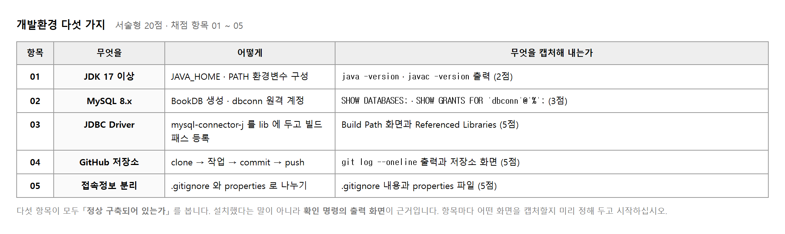
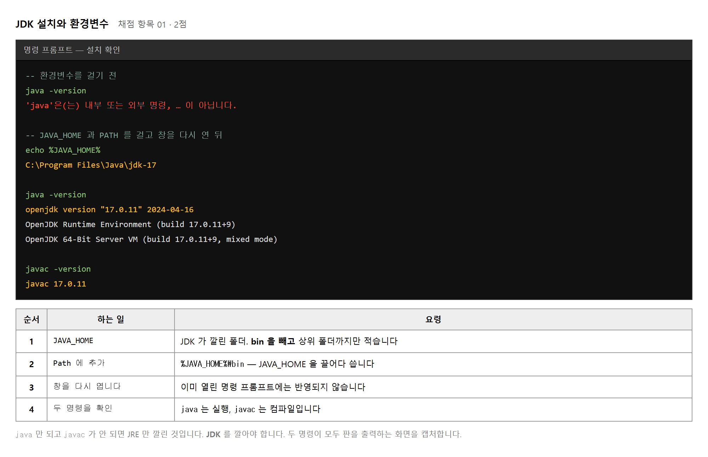
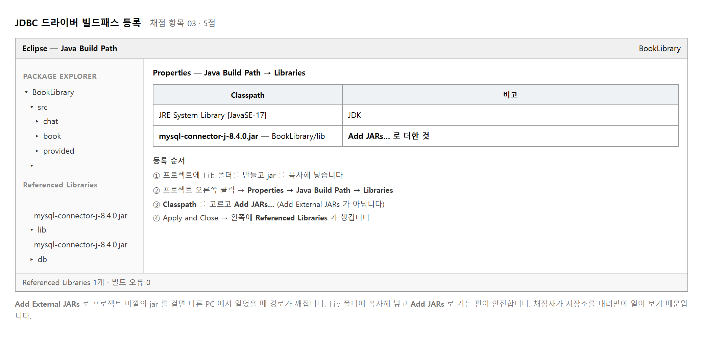
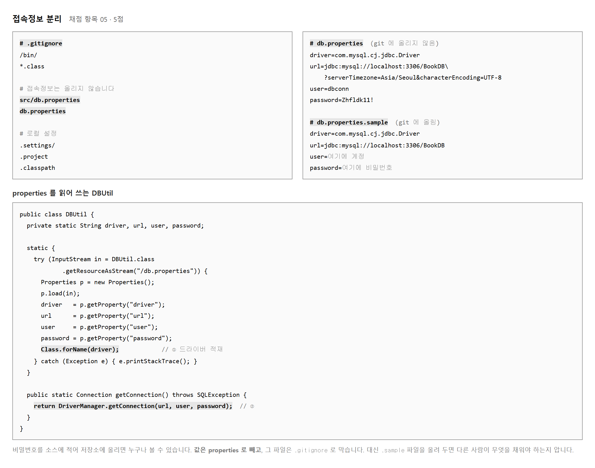
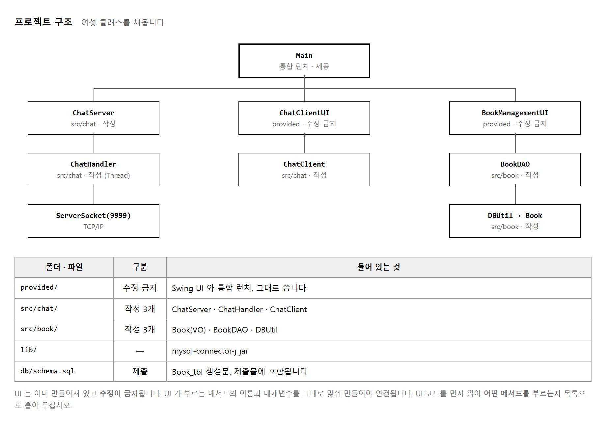
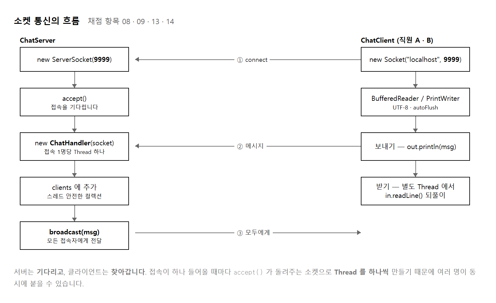
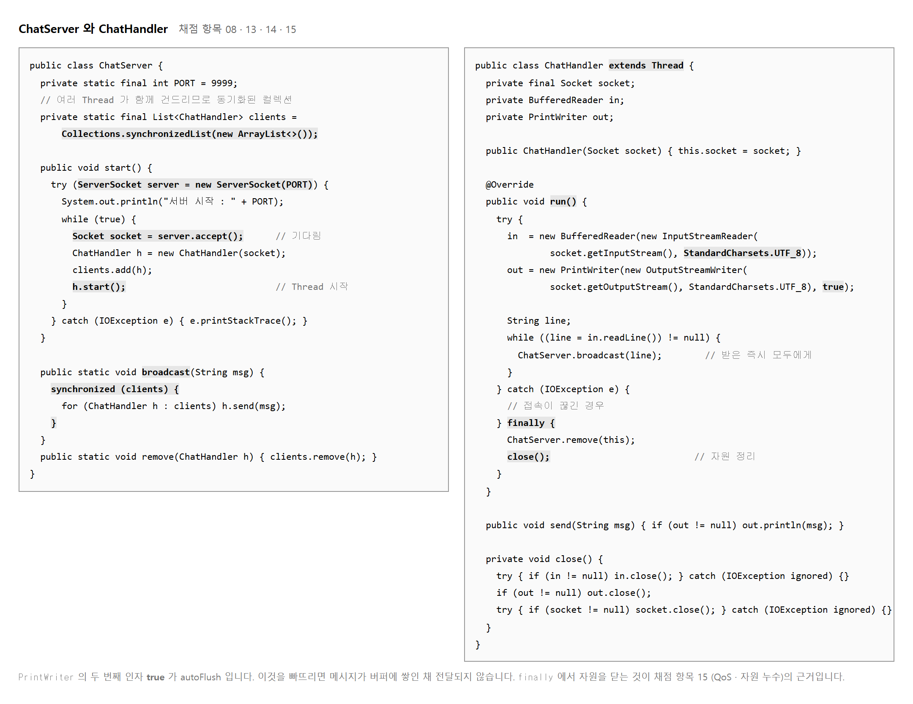
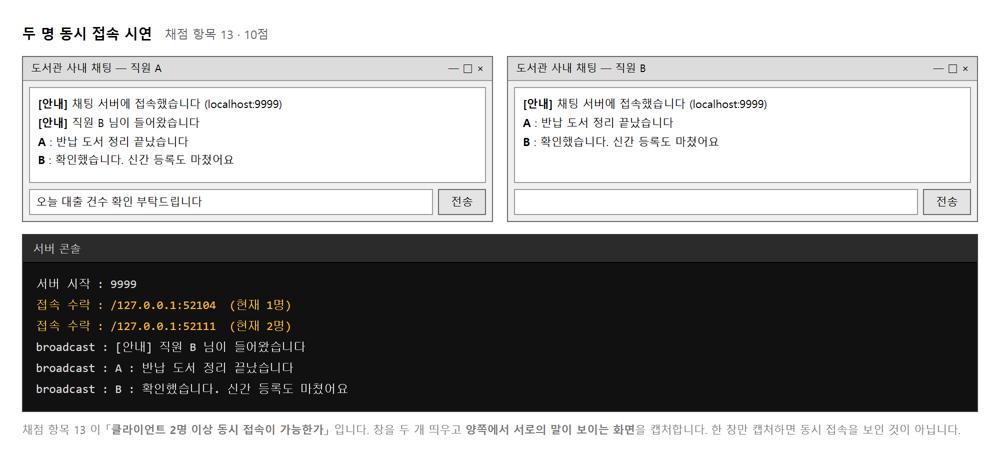
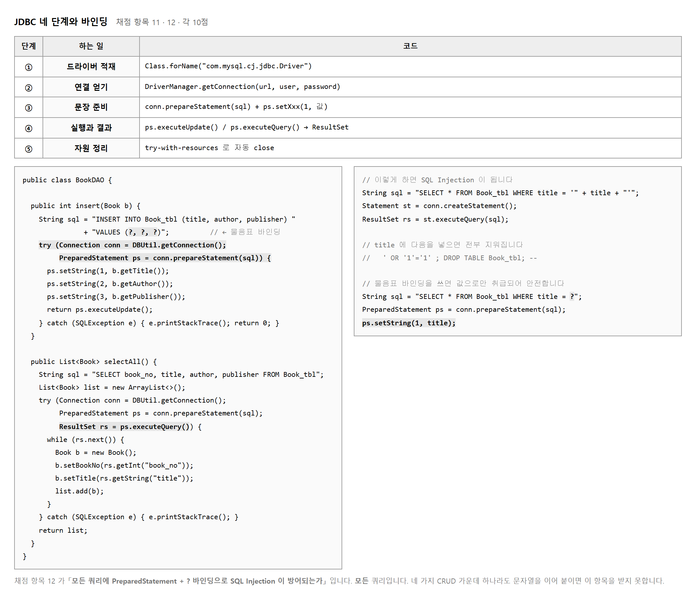
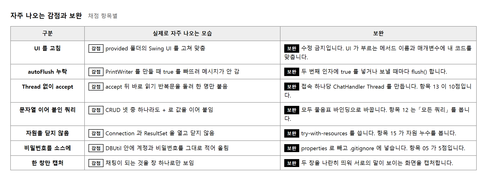

능력단위 네트워크 프로그래밍 구현 (2001020508_19v3) / 3수준 · 평가방법 서술형 (20점) + 문제해결 시나리오 (80점)
| 작업지시서 | 도서관 운영 시스템 과제가 여기 있습니다 |
| 제공된 UI 소스 | src/provided/ 에 넣을 화면 클래스입니다. 이름을 바꾸면 안 맞습니다 |
| JDK · Eclipse · MySQL | 본인 PC 에 깔아 둡니다 |
과제가 둘입니다. 개발환경을 갖추고 절차를 서술하는 것(서술형 20점)과 제공된 UI 에 맞춰 여섯 클래스를 채우는 것(문제해결 시나리오 80점)입니다. 주제는 도서관 운영 시스템이고, 직원 간 다중 채팅과 도서 CRUD 를 만듭니다.
| 묶음 | 능력단위요소 | 무엇을 하는가 | 배점 |
|---|---|---|---|
| ① | 개발환경 분석하기 | JDK · MySQL · JDBC 드라이버 · GitHub · 접속정보 분리 | 20 |
| ② | 기능 구현하기 | UI 연동 · 소켓 채팅 · 스레드 브로드캐스트 · JDBC CRUD · 자원 정리 | 80 |
제출물은 셋입니다. 작업 과정 PPT, GitHub 저장소 주소,
db/schema.sql 파일 입니다.
provided/ 폴더의 Swing UI 와 통합 런처는 수정이 금지됩니다.
UI 를 고쳐 내 코드에 맞추는 것이 아니라, 내 코드를 UI 에 맞춰야 합니다.
시작하기 전에 UI 코드를 읽어 어떤 클래스의 어떤 메서드를 부르는지 목록으로 뽑으십시오.
앞 교과들에서 자바 · 데이터베이스 · 형상관리를 따로 다루었습니다. 이 교과는 그것들을 한 프로그램 안에서 함께 씁니다. 그래서 환경을 갖추는 일이 별도의 능력단위요소로 떨어져 있습니다.
| 수행준거 | 준거의 말 | 이 평가에서 |
|---|---|---|
| 2.1 | 네트워크 프로그래밍 응용프로그램 구현 | Swing UI 의 이벤트 리스너가 동작하도록 연결 · 통합 런처 실행 |
| 2.2 | 네트워크 프로토콜 구현 | ServerSocket(9999) · Socket · BufferedReader / PrintWriter |
| 2.3 | 자원관리를 위한 데이터베이스 구현 | Book VO · BookDAO · DBUtil 로 JDBC CRUD |
| 2.4 | 에이전트 구현 | 접속 1명당 Thread(ChatHandler) · broadcast 로 전달 |
| 2.5 | QoS 제공방안 구현 | 소켓 · 스트림 · DB 자원을 빠짐없이 닫아 누수를 없앰 |
에이전트는 스레드를, QoS 는 자원 정리를 뜻합니다. 준거의 말과 실제 작업을 미리 짝지어 두면 무엇을 하라는 것인지 헷갈리지 않습니다.
다섯 단계로 나누었습니다. 환경을 먼저 갖추지 않으면 뒤로 갈 수 없습니다. 특히 JDBC 드라이버를 빌드패스에 걸지 않으면 데이터베이스 쪽 코드가 아예 컴파일되지 않습니다.
채울 클래스는 여섯입니다. src/chat/ 에 ChatServer · ChatHandler · ChatClient,
src/book/ 에 Book · BookDAO · DBUtil 입니다.
채팅과 도서관리는 서로 독립이므로 어느 쪽을 먼저 해도 됩니다.

서술형 다섯 항목이 2 · 3 · 5 · 5 · 5 점입니다.
JDK 설치는 2점인데 접속정보 분리는 5점입니다.
설치를 열심히 캡처하고 .gitignore 를 빠뜨리면 더 큰 점수를 잃습니다.
| 쪽 | 내용 | 채점 항목 |
|---|---|---|
| 2 | JDK 설치와 환경변수 확인 | 01 |
| 3 | MySQL · BookDB · dbconn 계정 | 02 |
| 4 | JDBC 드라이버 빌드패스 | 03 |
| 5 | GitHub clone · commit · push | 04 |
| 6 | .gitignore 와 properties | 05 |
| 7 ~ 8 | UI 연동과 통합 런처 실행 | 06 · 07 |
| 9 ~ 11 | 소켓 채팅 — 코드와 2인 접속 시연 | 08 · 09 · 13 · 14 |
| 12 ~ 14 | JDBC — VO · DAO · CRUD 동작 | 10 · 11 · 12 |
| 15 | 자원 정리 코드 | 15 |
목적 — 이 교과는 제출물이 셋 입니다. 하나라도 빠지면 그 몫이 통째로 사라집니다. 시작하기 전에 셋을 적어 두고 갑니다.
| 내는 것 | 형식 | 없으면 |
|---|---|---|
| 작업 과정 PPT | 파일 | 서술형 20점의 근거가 없어집니다 |
| GitHub 저장소 주소 | 주소 한 줄 | 코드를 볼 수 없어 80점을 못 봅니다 |
db/schema.sql | 저장소 안의 파일 | 채점자가 표를 만들 수 없습니다 |
.gitignore 를 먼저 만들고 시작합니다.제목만 적고 비워 둡니다. 빈 쪽이 「아직 안 한 것」 을 알려 줍니다.
| 쪽 | 제목 | 항목 | 실습 |
|---|---|---|---|
| 1 | 표지 | — | — |
| 2 | JDK 설치와 환경변수 | 01 | 2-2 |
| 3 | MySQL · BookDB · dbconn | 02 | 2-3 |
| 4 | JDBC 드라이버 빌드패스 | 03 | 2-4 |
| 5 | clone · commit · push | 04 | 2-5 |
| 6 | .gitignore 와 properties | 05 | 2-5 |
| 7 · 8 | UI 연동과 통합 런처 | 06 · 07 | 2-7 |
| 9 ~ 11 | 소켓 채팅 코드와 2인 시연 | 08 · 09 · 13 · 14 | 2-9 ~ 2-11 |
| 12 ~ 14 | JDBC VO · DAO · CRUD | 10 · 11 · 12 | 2-12 ~ 2-14 |
| 15 | 자원 정리 | 15 | 2-15 |
| 묶음 | 항목 | 합 | 성격 |
|---|---|---|---|
| 개발환경 (서술형) | 01 ~ 05 | 20 | 캡처만 잘 해도 받습니다 |
| UI 연동 | 06 · 07 | 20 | 제공 코드에 맞추기 |
| 소켓 채팅 | 08 · 09 · 13 · 14 | 30 | 가장 큽니다 |
| 도서관리 (JDBC) | 10 · 11 · 12 | 25 | 앞 교과와 겹칩니다 |
| 자원 정리 | 15 | 5 | 코드 몇 줄 |
| 하지 말 것 | 대신 |
|---|---|
provided/ 안의 파일을 고치기 |
수정 금지입니다. 내 클래스의 이름과 매개변수를 UI 에 맞춥니다 |
| 비밀번호를 소스에 그대로 적기 | db.properties 로 빼고 .gitignore 에 넣습니다 |
| 커밋을 한 번에 몰아서 하기 | 기능마다 나눕니다. 항목 04 가 흐름을 봅니다 |
제출물 — 열다섯 쪽짜리 빈 PPT (제목과 항목 번호만)
스스로 확인 — ① 내야 할 것이 셋인 것을 압니까 ② 저장소를 공개로 할지 비공개로 할지 정했습니까 ③ 어느 쪽(채팅 · 도서관리)을 먼저 할지 정했습니까

PATH 에 경로를 그대로 적어도 됩니다.
그러나 JAVA_HOME 을 두고 PATH 에서 %JAVA_HOME%\bin 으로 끌어 쓰면
판을 올릴 때 한 곳만 고치면 됩니다.
Eclipse 나 빌드 도구도 이 변수를 찾아 씁니다.
java 는 되는데 javac 가 안 되면 JRE 만 깔린 것입니다.
JDK 를 깔아야 합니다. 또 환경변수를 걸고도 되지 않으면
명령 프롬프트를 닫고 다시 여십시오. 열려 있던 창에는 반영되지 않습니다.
목적 — 항목 01 은 2점 입니다. 가장 작습니다. 그러나 여기가 안 되면 뒤의 98점을 아예 시작할 수 없습니다.
Win+R → cmd → Enter.
java -version
javac -version
openjdk version "21.0.2" 2024-01-16
OpenJDK Runtime Environment (build 21.0.2+13-58)
OpenJDK 64-Bit Server VM (build 21.0.2+13-58, mixed mode, sharing)
javac 21.0.2
둘 다 판이 나와야 합니다. 판 번호는 달라도 됩니다.
| 이렇게 나오면 | 뜻과 할 일 |
|---|---|
| 둘 다 판이 나옴 | 통과입니다. 이 화면을 캡처 |
java 만 되고
javac 는 안 됨 |
JRE 만 깔린 것입니다. JDK 를 설치하십시오 |
| 둘 다 안 됨 | PATH 에 JDK 의 bin 이 없습니다 |
없을 때 나오는 말은 이것입니다.
'javac'은(는) 내부 또는 외부 명령, 실행할 수 있는 프로그램, 또는
배치 파일이 아닙니다.
JAVA_HOME 이 걸려 있는지 봅니다set JAVA_HOME
| 걸려 있으면 | 안 걸려 있으면 |
|---|---|
JAVA_HOME=C:\jdk-21.0.2 |
JAVA_HOME 환경 변수가 정의되지 않았습니다. |
JAVA_HOME 이 없어도 java 는 될 수 있습니다.
PATH 에 C:\jdk-21.0.2\bin 을 직접 적어 두면 명령은 잘 돕니다.
그래서 「되니까 걸린 줄 알았다」 가 됩니다.
그러나 Eclipse · Maven · Tomcat 은 JAVA_HOME 을 찾습니다.
두 명령이 되더라도 set JAVA_HOME 을 꼭 쳐 보십시오.Win → 「환경 변수」 로 검색 →
시스템 환경 변수 편집.JAVA_HOME,
값은 JDK 폴더 (\bin 을 빼고).
C:\jdk-21.0.2 ·
틀림 C:\jdk-21.0.2\binPath 를 고르고 편집 → 새로 만들기 →
%JAVA_HOME%\bin.JDK 폴더가 어디인지 모르겠으면 이렇게 찾습니다.
where java
C:\jdk-21.0.2\bin\java.exe
여기서 \bin\java.exe 를 뗀 것이
JAVA_HOME 에 넣을 값입니다.
이미 걸려 있었다면 「전」 은 없어도 됩니다. 세 줄이 다 보이게 잘라야 판을 확인할 수 있습니다.
| 캡처에 보여야 할 것 | 왜 |
|---|---|
java -version 결과 | 실행 환경이 있다 |
javac -version 결과 | JDK 다 (JRE 가 아니다) |
set JAVA_HOME 결과 | 환경변수를 걸었다 |
제출물 — 세 명령의 결과가 담긴 명령 프롬프트 캡처
스스로 확인 —
① javac 가 판을 출력합니까
② set JAVA_HOME 이 경로를 출력합니까
③ 그 경로 끝에 \bin 이 붙어 있지 않습니까
④ 환경변수를 고친 뒤 창을 새로 열었습니까
데이터베이스 이름이 BookDB, 계정이 dbconn 으로 지정되어 있습니다. 앞 교과 「데이터베이스 구현」 과 같은 절차이므로 그때 캡처한 화면을 참고하십시오.
mysql> CREATE DATABASE BookDB
-> DEFAULT CHARACTER SET utf8mb4;
mysql> CREATE USER 'dbconn'@'%' IDENTIFIED BY 'Zhfldk11!';
mysql> GRANT ALL PRIVILEGES ON BookDB.* TO 'dbconn'@'%';
mysql> FLUSH PRIVILEGES;
mysql> SHOW DATABASES;
mysql> SHOW GRANTS FOR 'dbconn'@'%'; -- 이 두 결과를 캡처합니다
제출물에 db/schema.sql 이 들어 있습니다.
테이블을 만드는 문장을 파일로 남겨 저장소에 올립니다.
-- db/schema.sql CREATE TABLE IF NOT EXISTS Book_tbl ( book_no INT NOT NULL AUTO_INCREMENT, title VARCHAR(100) NOT NULL, author VARCHAR(50), publisher VARCHAR(50), reg_date DATETIME DEFAULT CURRENT_TIMESTAMP, PRIMARY KEY (book_no) );
IF NOT EXISTS 를 붙이면 이미 있을 때 오류가 나지 않아
채점자가 그대로 실행해 볼 수 있습니다.
목적 — 항목 02 는 3점이지만,
여기서 만든 db/schema.sql 이 제출물 셋 가운데 하나 입니다.
mysql -u root -p
Enter password: ********
Welcome to the MySQL monitor. Commands end with ; or \g.
mysql>
CREATE DATABASE BookDB DEFAULT CHARACTER SET utf8mb4;
CREATE USER 'dbconn'@'%' IDENTIFIED BY 'Zhfldk11!';
GRANT ALL PRIVILEGES ON BookDB.* TO 'dbconn'@'%';
FLUSH PRIVILEGES;
| 적은 것 | 뜻 |
|---|---|
utf8mb4 |
한글과 이모지가 깨지지 않습니다. 만들 때 정하는 편이 뒤탈이 없습니다 |
'dbconn'@'%' |
% 는 어느 컴퓨터에서든 붙을 수 있다는 뜻입니다.
지시서가 원격 계정을 요구합니다 |
ON BookDB.* |
이 데이터베이스에만 권한을 줍니다.
*.* 로 주면 필요 이상입니다 |
SHOW DATABASES;
+--------------------+
| Database |
+--------------------+
| BookDB |
| information_schema |
| mysql |
| performance_schema |
| sys |
+--------------------+
SHOW GRANTS FOR 'dbconn'@'%';
+----------------------------------------------------+
| Grants for dbconn@% |
+----------------------------------------------------+
| GRANT USAGE ON *.* TO `dbconn`@`%` |
| GRANT ALL PRIVILEGES ON `BookDB`.* TO `dbconn`@`%` |
+----------------------------------------------------+
GRANT USAGE 줄은 정상입니다.
「로그인은 되지만 아무 권한도 없다」 는 뜻으로 계정을 만들면 늘 따라옵니다.
두 번째 줄이 실제로 준 권한입니다.schema.sql 을 파일로 만듭니다프로젝트에 db 폴더를 만들고 그 안에 schema.sql 을 둡니다.
-- db/schema.sql — 도서관 운영 시스템
CREATE TABLE IF NOT EXISTS Book_tbl (
book_no INT NOT NULL AUTO_INCREMENT,
title VARCHAR(100) NOT NULL,
author VARCHAR(50),
publisher VARCHAR(50),
reg_date DATETIME DEFAULT CURRENT_TIMESTAMP,
PRIMARY KEY (book_no)
);
| 적은 것 | 왜 |
|---|---|
IF NOT EXISTS |
이미 있어도 오류 없이 넘어갑니다. 채점자가 그대로 실행해 볼 수 있습니다 |
AUTO_INCREMENT |
번호를 자동으로 매깁니다. insert 에
book_no 를 넣지 않는 까닭입니다 |
DEFAULT CURRENT_TIMESTAMP |
등록 시각이 저절로 들어갑니다 |
mysql -u root -p BookDB < db/schema.sql
아무것도 안 나오면 된 것입니다. 확인은 이렇게 합니다.
mysql> DESC BookDB.Book_tbl;
+-----------+--------------+------+-----+-------------------+-------------------+
| Field | Type | Null | Key | Default | Extra |
+-----------+--------------+------+-----+-------------------+-------------------+
| book_no | int | NO | PRI | NULL | auto_increment |
| title | varchar(100) | NO | | NULL | |
| author | varchar(50) | YES | | NULL | |
| publisher | varchar(50) | YES | | NULL | |
| reg_date | datetime | YES | | CURRENT_TIMESTAMP | DEFAULT_GENERATED |
+-----------+--------------+------+-----+-------------------+-------------------+
root 로만 확인하면 계정을 제대로 만들었는지 알 수 없습니다.
mysql -u dbconn -p BookDB
mysql> SHOW TABLES;
+------------------+
| Tables_in_BookDB |
+------------------+
| Book_tbl |
+------------------+
제출물 — SHOW DATABASES · SHOW GRANTS ·
DESC Book_tbl 세 화면 + db/schema.sql
스스로 확인 —
① 데이터베이스 이름이 BookDB 입니까
② 계정이 'dbconn'@'%' 입니까 (localhost 아님)
③ schema.sql 을 실제로 돌려 봤습니까
④ dbconn 계정으로 표가 보입니까

lib 폴더에 두고 Add JARs 로 겁니다.채점자는 저장소를 내려받아 Eclipse 에서 엽니다.
jar 가 C:\Users\내이름\Downloads 같은 곳에 있으면 그 PC 에서는 찾을 수 없습니다.
프로젝트 안 lib 폴더에 복사해 넣고 거는 것이 안전합니다.
// 아무 클래스에서나 한 줄 넣고 컴파일해 봅니다
Class.forName("com.mysql.cj.jdbc.Driver");
// 걸리지 않았으면
// ClassNotFoundException: com.mysql.cj.jdbc.Driver
왼쪽 탐색기에 Referenced Libraries 가 생기고 그 안에 jar 가 보이면 된 것입니다. 그 화면과 Build Path 설정 화면 두 장을 캡처합니다.
목적 — 항목 03 은 5점 입니다. 그리고 이것이 안 되면 도서관리 쪽 25점이 통째로 돌지 않습니다.
lib.mysql-connector-j-9.0.0.jar 를
그 폴더로 끌어다 놓습니다 (Copy files 선택).C:\Users\내이름\Downloads\… 같은 경로는 그 PC 에 없습니다.
프로젝트 안에 넣어야 저장소와 함께 따라갑니다.lib/mysql-connector-j-9.0.0.jar 를 고르고 OK.| 두 단추 | 차이 |
|---|---|
| Add JARs… | 프로젝트 안의 jar. 경로가 상대경로라 옮겨도 따라옵니다 |
| Add External JARs… | 프로젝트 밖의 jar. 이것을 쓰면 안 됩니다 |
프로젝트 아래에 Referenced Libraries 가 새로 생기고 그 안에 jar 가 보이면 걸린 것입니다.
BookLibrary
├ src
├ lib
│ └ mysql-connector-j-9.0.0.jar
├ db
│ └ schema.sql
└ Referenced Libraries ← 이것이 생겨야 합니다
└ mysql-connector-j-9.0.0.jar
보이는 것만으로는 부족합니다. 실제로 불러 봅니다.
public class DriverTest {
public static void main(String[] args) throws Exception {
Class.forName("com.mysql.cj.jdbc.Driver");
System.out.println("드라이버 OK");
}
}
| 나오는 것 | 뜻 |
|---|---|
드라이버 OK | 걸렸습니다 |
ClassNotFoundException:
com.mysql.cj.jdbc.Driver |
안 걸렸습니다. 절차 2 를 다시 하십시오 |
드라이버를 안 건 채로 DAO 를 돌리면 이런 모습으로 나옵니다.
Exception in thread "main" java.lang.ExceptionInInitializerError
at book.BookDAO.insert(BookDAO.java:14)
at book.CrudDemo.main(CrudDemo.java:10)
Caused by: java.lang.IllegalStateException:
java.lang.ClassNotFoundException: com.mysql.cj.jdbc.Driver
Caused by: 아래를 보십시오.
맨 위의 ExceptionInInitializerError 만 보면 무슨 말인지 모릅니다.
진짜 까닭은 늘 아래에 있습니다.
| 적은 것 | 맞는가 |
|---|---|
com.mysql.cj.jdbc.Driver |
맞습니다 (Connector/J 8 이상) |
com.mysql.jdbc.Driver |
옛 이름입니다. 돌아가기는 하지만 이런 말이 뜹니다 —
Loading class `com.mysql.jdbc.Driver'. This is deprecated.
The new driver class is `com.mysql.cj.jdbc.Driver'.
cj 를 넣으십시오 |
com.mysql.cj.jdbc.driver |
D 가 대문자여야 합니다 |
Class.forName 이 없어도 돕니다.
jar 만 걸려 있으면 자바가 알아서 찾습니다.
그래도 적어 두는 편이 좋습니다 —
안 걸렸을 때 어디가 문제인지 바로 알려 주기 때문입니다.| 캡처 | 무엇이 보여야 |
|---|---|
| Build Path 설정 창 | Libraries 탭에 jar 가 올라가 있는 모습 |
| 왼쪽 탐색기 | lib 폴더와 Referenced Libraries 가 함께 |
제출물 — 위 두 화면 + 드라이버 OK 가 찍힌 콘솔
스스로 확인 —
① jar 가 프로젝트 안 lib 에 있습니까
② Add JARs 로 걸었습니까 (External 아님)
③ Referenced Libraries 가 보입니까
④ Class.forName 이 오류 없이 지나갑니까

.gitignore 로 막습니다.git clone https://github.com/조이름/BookLibrary.git -- 작업 -- git add . git commit -m "feat: BookDAO insert 구현" git push git log --oneline -- 이 출력을 캡처합니다 e91c4a2 feat: BookDAO insert 구현 7b90e14 feat: ChatServer broadcast 구현 1a22d03 chore: 프로젝트 초기 설정
커밋이 한 건뿐이면 흐름을 시연했다고 보기 어렵습니다. 기능 단위로 나누어 서너 건 이상 남기십시오.
.gitignore 를 가장 먼저 만들고 그 다음에 첫 커밋을 하십시오.
이미 올렸다면 비밀번호를 바꾸는 것이 확실합니다.
목적 — 항목 04 · 05 가 각 5점 입니다. 그런데 여기는 점수보다 무서운 것이 있습니다. 한 번 올라간 비밀번호는 지워도 이력에 남습니다.
.gitignore 를 «가장 먼저» 만듭니다프로젝트 맨 위에 .gitignore 라는 이름으로 만듭니다.
확장자는 없고 점으로 시작합니다.
/bin/
*.class
src/book/db.properties
.gitignore → 첫 커밋 순입니다.
거꾸로 하면 실습 2-5 절차 5 에서 보여 드릴 일이 벌어집니다.src/book/db.properties
db.url=jdbc:mysql://localhost:3306/BookDB?serverTimezone=Asia/Seoul&characterEncoding=UTF-8
db.user=dbconn
db.password=Zhfldk11!
그리고 값을 지운 예시 파일을 하나 더 만들어 이것만 올립니다.
src/book/db.properties.example
db.url=jdbc:mysql://localhost:3306/BookDB?serverTimezone=Asia/Seoul&characterEncoding=UTF-8
db.user=여기에_계정
db.password=여기에_비밀번호
.gitignore 에 넣지 않습니다.try (InputStream is =
DBUtil.class.getResourceAsStream("/book/db.properties")) {
Properties p = new Properties();
p.load(is);
url = p.getProperty("db.url");
user = p.getProperty("db.user");
password = p.getProperty("db.password");
}
| 겪는 일 | 까닭과 해결 |
|---|---|
is 가 null 이라
NullPointerException |
.properties 가 bin 으로 복사되지 않았습니다.
src 안에 두고 Project → Clean 을 한 번 하십시오 |
경로를 "db.properties" 로 적음 |
앞에 / 가 없으면 그 클래스의 패키지 기준입니다.
/book/db.properties 처럼 / 로 시작하는 편이 헷갈리지 않습니다 |
git add .
git commit -m "chore: 프로젝트 초기 설정"
git add src/chat/ChatServer.java
git commit -m "feat: ChatServer accept 구현"
git add src/book/BookDAO.java
git commit -m "feat: BookDAO insert 구현"
git push
git log --oneline
e91c4a2 feat: BookDAO insert 구현
7b90e14 feat: ChatServer accept 구현
1a22d03 chore: 프로젝트 초기 설정
커밋이 하나뿐이면 「흐름을 시연했다」 고 보기 어렵습니다.
항목 04 가 clone · commit · push
흐름을 봅니다. 서너 건 이상 남기십시오.
연습용 폴더를 하나 만들어 시험해 보십시오. 실제 저장소에서 하지 마십시오.
git init -b main
echo db.password=Zhfldk11! > db.properties
git add . && git commit -m "chore: 초기 설정" ← 비밀번호가 올라갔다
echo db.properties > .gitignore ← 뒤늦게 막는다
git add .gitignore && git commit -m "chore: gitignore"
git status --short
(아무것도 나오지 않습니다)
막힌 것처럼 보입니다. 그러나 이미 추적 중인 파일은 .gitignore 가 막지 못합니다.
git ls-files
.gitignore
db.properties ← 여전히 추적되고 있습니다
git rm --cached db.properties
git commit -m "chore: 접속정보를 추적에서 뺀다"
git ls-files
.gitignore ← 이제 목록에서 빠졌습니다
이제 됐을까요. 첫 커밋을 꺼내 보십시오.
git show 1a22d03:db.properties
db.password=Zhfldk11!
| 캡처 | 항목 | 보여야 할 것 |
|---|---|---|
git log --oneline | 04 | 커밋이 여러 건 |
| 저장소 웹 화면 | 04 | push 된 파일 목록 |
.gitignore 내용 | 05 | db.properties 줄 |
저장소에서 본 src/book | 05 | .example 만 있고
db.properties 는 없는 모습 |
제출물 — 위 네 화면
스스로 확인 —
① .gitignore 를 첫 커밋 전에 만들었습니까
② 저장소 웹 화면에 db.properties 가 없습니까
③ .example 파일은 올라가 있습니까
④ 커밋이 서너 건 이상입니까

두 기능은 서로 부르지 않습니다. 통합 런처에서 각각 띄울 뿐입니다. 그래서 한쪽이 안 되어도 다른 쪽은 채점을 받을 수 있습니다. 잘 되는 쪽을 먼저 끝내 점수를 확보하는 편이 안전합니다.
| 묶음 | 클래스 | 배점 |
|---|---|---|
| 채팅 | ChatServer · ChatHandler · ChatClient | 항목 08 · 09 · 13 · 14 — 합쳐 30점 |
| 도서관리 | Book · BookDAO · DBUtil | 항목 10 · 11 · 12 — 합쳐 25점 |
| 공통 | UI 연동 · 자원 정리 | 항목 06 · 07 · 15 — 합쳐 25점 |
목적 — 코드를 짜기 전에 자리를 먼저 만듭니다. 여섯 개가 다 있으면 UI 의 붉은 줄이 절반쯤 사라져 무엇이 더 필요한지 보이기 시작합니다.
src 오른쪽 눌러 New → Package 를 두 번.
chat
book
Chat 으로 만들면 import Chat.ChatServer; 가 되어
제공된 UI 의 import chat.ChatServer; 와 맞지 않습니다.
UI 가 쓰는 이름 그대로 만드십시오.| 패키지 | 클래스 | 무엇을 하는 것 | main 체크 |
|---|---|---|---|
chat | ChatServer |
문을 열고 기다립니다 | 함 |
chat | ChatHandler |
접속자 한 사람을 맡습니다 | 안 함 |
chat | ChatClient |
찾아가 붙습니다 | 안 함 |
book | Book |
책 한 권의 값을 담습니다 | 안 함 |
book | BookDAO |
표를 넣고 꺼냅니다 | 안 함 |
book | DBUtil |
연결을 만들어 줍니다 | 안 함 |
ChatHandler 만 Superclass 에
java.lang.Thread 를 적어 둡니다.
나머지는 비워 둡니다.
BookLibrary
├ src
│ ├ chat
│ │ ├ ChatServer.java
│ │ ├ ChatHandler.java
│ │ └ ChatClient.java
│ ├ book
│ │ ├ Book.java
│ │ ├ BookDAO.java
│ │ ├ DBUtil.java
│ │ └ db.properties
│ └ provided ← 고치지 않습니다
├ lib
│ └ mysql-connector-j-9.0.0.jar
├ db
│ └ schema.sql
└ .gitignore
두 기능은 서로 부르지 않습니다. 따로 만들고 따로 채점받습니다.
| 먼저 할 것 | 배점 | 이런 사람에게 |
|---|---|---|
| 도서관리 (book) | 25 | 앞 교과에서 JDBC 를 해 본 사람. 익숙한 것부터 끝내 점수를 확보합니다 |
| 소켓 채팅 (chat) | 30 | 배점이 큽니다. 시간이 넉넉할 때 |
git add .
git commit -m "chore: 패키지와 빈 클래스 구성"
아직 아무 기능도 없지만 커밋 이력을 쌓기 시작하는 것이 항목 04 입니다. 마지막에 한 번에 올리면 흐름이 남지 않습니다.
제출물 — 패키지 구조가 보이는 탐색기 캡처
스스로 확인 —
① 패키지 이름이 소문자 chat · book 입니까
② 클래스가 여섯 개 다 있습니까
③ ChatHandler 가 Thread 를 상속합니까
④ provided/ 를 건드리지 않았습니까
provided/ 의 UI 코드를 열어 내가 만들 클래스를 부르는 줄을 찾습니다.
그 줄이 요구하는 클래스 이름 · 메서드 이름 · 매개변수 · 돌려주는 값을 표로 적습니다.
| UI 가 부르는 것 | 만들어야 하는 것 | 맞춰야 하는 점 |
|---|---|---|
| new BookDAO() | BookDAO 기본 생성자 | 매개변수 없는 생성자가 있어야 합니다 |
| dao.selectAll() | List<Book> selectAll() |
돌려주는 형이 List 여야 표에 채울 수 있습니다 |
| b.getTitle() | Book 의 getter | 필드 이름과 getter 이름이 규칙대로여야 합니다 |
| dao.insert(book) | int insert(Book b) |
매개변수가 Book 한 개입니다 |
| client.send(msg) | ChatClient 의 send |
이름과 매개변수가 정확히 같아야 합니다 |
UI 가 selectAll() 을 부르는데 내가 getAll() 로 만들면
컴파일이 되지 않습니다. UI 를 고치고 싶어지지만 수정 금지입니다.
내 메서드 이름을 바꾸십시오.
목적 — 항목 06 · 07 이 각 10점, 합쳐 20점입니다. UI 는 고칠 수 없습니다. 그러므로 UI 가 부르는 이름에 내 코드를 맞춰야 합니다.
Eclipse 에서 Ctrl+H (Search) →
File Search 탭에 BookDAO 를 넣고 찾습니다.
ChatClient · Book 도 같은 식으로 찾습니다.
붉은 줄마다 네 가지를 적습니다.
| UI 가 부르는 줄 | 이름 | 매개변수 | 돌려주는 것 |
|---|---|---|---|
new BookDAO() | BookDAO |
없음 | — |
dao.selectAll() | selectAll |
없음 | List<Book> |
dao.insert(book) | insert |
Book 하나 | int |
b.getTitle() | getTitle |
없음 | String |
client.send(msg) | send |
String 하나 | void |
UI 가 selectAll() 을 부르는데
내가 getAll() 로 만들었다고 해 봅시다.
Ui.java:7: error: cannot find symbol
for (Book b : dao.selectAll()) System.out.println(b.getTitle());
^
symbol: method selectAll()
location: variable dao of type BookDAO
| 메시지의 조각 | 읽는 법 |
|---|---|
symbol: method selectAll() |
이 이름을 찾고 있습니다 |
location: … of type BookDAO |
이 클래스에서 찾고 있습니다 |
즉 「BookDAO 에 selectAll 을 만들어라」 는 말입니다. UI 를 고치는 것이 아니라 내 메서드 이름을 바꾸는 것이 답입니다.
Ui2.java:4: error: method send in class Client cannot be applied to given types;
new Client().send("hi");
^
required: String,int
found: String
reason: actual and formal argument lists differ in length
required 가 내가 만든 것, found 가 UI 가 넘기는 것입니다.
required 를 found 에 맞춰 고칩니다.
BookDAO 에 이름 · 매개변수 · 리턴형이 정확히 맞는
빈 메서드가 만들어집니다.return null; 이나
throw new UnsupportedOperationException() 으로 채워집니다.
그대로 두고 제출하면 UI 는 뜨는데 아무것도 안 됩니다.
실습 2-9 부터 하나씩 채웁니다.아직 몸통이 비어 있어도 창은 떠야 합니다.
| 떠야 할 창 | 확인 |
|---|---|
| 채팅 서버 | 콘솔에 기다린다는 표시 |
| 채팅 클라이언트 | 입력칸과 보내기 단추 |
| 도서관리 | 빈 표와 등록 · 수정 · 삭제 단추 |
세 창이 함께 떠 있는 화면이 항목 07 의 근거입니다. 창을 겹치지 말고 나란히 놓아 한 장에 담으십시오.
제출물 — 절차 2 의 표 + 세 창이 함께 뜬 화면
스스로 확인 —
① UI 의 붉은 줄이 모두 사라졌습니까
② provided/ 를 한 글자도 안 고쳤습니까
③ 통합 런처에서 세 창이 다 뜹니까
④ 껍데기 메서드를 채워야 한다는 것을 압니까

| 낱말 | 뜻 | 이 과제에서 |
|---|---|---|
| IP | 어느 컴퓨터인가 | 같은 PC 에서 시연하면 localhost (127.0.0.1) |
| 포트 | 그 컴퓨터의 어느 문인가 | 9999 로 지정되어 있습니다 |
| ServerSocket | 문을 열고 기다리는 쪽 | ChatServer |
| Socket | 찾아가 붙는 쪽 | ChatClient |
목적 — 소켓은 눈에 안 보입니다. 그래서 「돌아가는 것 같은데 안 붙는다」 는 상태에서 시간을 씁니다. 명령 한 줄로 확인하는 법을 먼저 익혀 둡니다.
명령 프롬프트를 열고 칩니다.
netstat -ano | findstr :9999
(아무것도 나오지 않습니다)
아무것도 안 나오는 것이 정상입니다. 9999 번 문은 아직 닫혀 있습니다.
Eclipse 에서 ChatServer 를 실행한 뒤 같은 명령을 칩니다.
TCP 0.0.0.0:9999 0.0.0.0:0 LISTENING 17064
TCP [::]:9999 [::]:0 LISTENING 17064
| 칸 | 보이는 것 | 뜻 |
|---|---|---|
| 내 주소 | 0.0.0.0:9999 |
어느 랜선으로 오든 9999 번 문에서 받겠다 |
| 상대 주소 | 0.0.0.0:0 |
아직 아무도 안 붙었습니다 |
| 상태 | LISTENING |
기다리는 중 — accept() 가 멈춰 있는 상태 |
| PID | 17064 |
이 포트를 쥐고 있는 프로그램 번호 |
[::] 로 시작하는 줄은 IPv6 용입니다. 두 줄이 나오는 것이 정상입니다.
번호(PID)는 기계마다 다릅니다.
채팅 클라이언트를 둘 띄운 뒤 다시 칩니다.
TCP 0.0.0.0:9999 0.0.0.0:0 LISTENING 17064
TCP 127.0.0.1:9999 127.0.0.1:61036 ESTABLISHED 17064
TCP 127.0.0.1:61036 127.0.0.1:9999 ESTABLISHED 47140
TCP [::]:9999 [::]:0 LISTENING 17064
| 줄 | 뜻 |
|---|---|
LISTENING 줄 |
그대로 남아 있습니다. 한 명 받았다고 문을 닫지 않습니다 —
while(true) 로 계속 기다리기 때문입니다 |
ESTABLISHED 줄 |
붙은 줄입니다. 한 접속마다 두 줄이 생깁니다 — 서버 쪽에서 본 것과 클라이언트 쪽에서 본 것 |
61036 같은 큰 번호 |
클라이언트 쪽 포트입니다. 운영체제가 아무 번호나 골라 줍니다. 내가 정하지 않습니다 |
ServerSocket 이 문이고, accept() 가 돌려주는
Socket 이 붙은 줄입니다. 문은 하나, 줄은 접속한 사람 수만큼입니다.Address already in use 를 «일부러» 내 봅니다서버를 끄지 않은 채로 한 번 더 실행해 보십시오.
[서버] 오류 Address already in use: bind
손대지 않은 코드인데 갑자기 안 됩니다. 앞서 띄운 서버가 아직 살아 있기 때문입니다.
| 끄는 법 | 어떻게 |
|---|---|
| Eclipse 의 Console | 오른쪽 위 붉은 네모(Terminate). 이것이 가장 빠릅니다 |
| Console 이 여러 개일 때 | Console 창 오른쪽 위 Display Selected Console 로 돌고 있는 것을 찾아 끕니다 |
| 그래도 남아 있을 때 | netstat 로 PID 를 보고
taskkill /F /PID 17064 |
클라이언트를 만들기 전에도 포트가 열렸는지만 확인할 수 있습니다. PowerShell 에서 칩니다.
Test-NetConnection -ComputerName localhost -Port 9999 -InformationLevel Quiet
| 결과 | 뜻 |
|---|---|
True | 열려 있습니다. 클라이언트 쪽 문제입니다 |
False | 서버가 안 떠 있습니다. 서버부터 고치십시오 |
이 한 줄이 「서버 문제인지 클라이언트 문제인지」를 갈라 줍니다. 양쪽을 동시에 의심하면 못 고칩니다.
| 낱말 | 뜻 | 이 과제에서 |
|---|---|---|
| IP | 어느 컴퓨터인가 | 같은 PC 에서 시연하므로 localhost = 127.0.0.1 |
| 포트 | 그 컴퓨터의 어느 문인가 | 9999 — 지시서가 정해 두었습니다 |
ServerSocket | 문을 열고 기다리는 쪽 | ChatServer · LISTENING 으로 보입니다 |
Socket | 찾아가 붙는 쪽 | ChatClient · ESTABLISHED 로 보입니다 |
제출물 — 서버 띄우기 전 · 후 · 접속 뒤
세 번의 netstat 화면
스스로 확인 —
① LISTENING 줄을 직접 봤습니까
② 접속 뒤에도 LISTENING 이 남아 있습니까
③ Address already in use 를 내 보고 껐습니까
④ 「서버 문제인지 클라이언트 문제인지」 가르는 법을 압니까

server.accept() 는 접속이 올 때까지 그 줄에서 멈춥니다.
그래서 반복문 안에 두고, 하나가 들어오면 스레드에 넘기고 다시 기다립니다.
while (true) {
Socket socket = server.accept(); // 여기서 멈춰 기다립니다
ChatHandler h = new ChatHandler(socket);
clients.add(h);
h.start(); // 넘기고 곧바로 다시 기다립니다
}
h.start() 가 아니라 h.run() 을 부르면
스레드가 만들어지지 않고 그 자리에서 실행되어 한 명만 붙습니다.
자주 나오는 실수입니다.
start() 를 run() 으로 쓰면 어떻게 되는가
목적 — 항목 08 은 5점입니다. 코드는 열 줄이 안 됩니다. 그런데 한 글자 차이로 조용히 망가지는 자리가 있어 그것을 직접 겪어 보고 갑니다.
public class ChatServer {
public static final int PORT = 9999;
private static final List<ChatHandler> clients =
Collections.synchronizedList(new ArrayList<>());
public static void main(String[] args) {
try (ServerSocket server = new ServerSocket(PORT)) {
System.out.println("[서버] " + PORT + " 포트에서 기다립니다");
…
} catch (IOException e) {
System.out.println("[서버] 오류 " + e.getMessage());
}
}
}
| 적은 것 | 왜 |
|---|---|
static final int PORT = 9999 |
번호를 한 곳에만 둡니다. 클라이언트도 이 값을 씁니다 |
static 목록 |
핸들러들이 같은 목록을 봐야 합니다. 객체마다 따로 가지면 서로를 모릅니다 |
synchronizedList |
여러 스레드가 동시에 건드립니다 (실습 2-10) |
try (…) |
끝날 때 문을 저절로 닫습니다 (항목 15) |
while (true) {
Socket socket = server.accept(); // 여기서 «멈춰» 기다립니다
ChatHandler h = new ChatHandler(socket);
clients.add(h);
h.start(); // 넘기고 곧바로 다시 기다립니다
}
accept() 는 접속이 올 때까지 그 줄에서 멈춥니다.
실습 2-8 에서 본 LISTENING 이 이 상태입니다.
한 명이 들어오면 Socket 을 하나 돌려주고, 반복문이 돌아
다시 accept() 에서 멈춥니다.
h.start() 를 h.run() 으로 바꿔 봅니다한 글자만 바꾸고 돌려 보십시오. 컴파일은 그대로 됩니다.
h.run(); // start 가 아니라 run
클라이언트 둘을 띄우고 주고받아 보면 이렇게 됩니다.
h.start() — 맞음 |
h.run() — 틀림 |
|---|---|
| [서버] 접속 수락 (현재 1명) [서버] 접속 수락 (현재 2명) [서버] 전달 직원A: 신간 입고됐나요? [서버] 전달 직원B: 네, 방금 들어왔습니다 |
[서버] 접속 수락 (현재 1명) [서버] 전달 직원A: 신간 입고됐나요? [서버] 접속 종료 (남은 0명) [서버] 접속 수락 (현재 1명) ← A 가 나간 «뒤에야» [서버] 전달 직원B: 네, 방금 들어왔습니다 |
「현재 2명」이 한 번도 안 나옵니다. 클라이언트 화면은 이렇습니다.
start() — 서로 보입니다 |
run() — 자기 말만 보입니다 |
|---|---|
[직원A 화면] 직원A: 신간 입고됐나요?
[직원B 화면] 직원A: 신간 입고됐나요?
[직원A 화면] 직원B: 네, 방금 들어왔습니다
[직원B 화면] 직원B: 네, 방금 들어왔습니다 |
[직원A 화면] 직원A: 신간 입고됐나요?
[직원B] 연결이 끊겼습니다
[직원A 화면] 직원A: B님 나가셨네요 |
run() 은 그냥 메서드를 부른 것이라 그 자리에서 끝까지 실행되고,
그동안 accept() 로 돌아가지 못하기 때문입니다.
start() 라야 새 스레드가 생겨 각자 돌아갑니다.
확인했으면 되돌리십시오.| 줄 | 하는 일 |
|---|---|
server.accept() |
한 사람을 받아 그 사람과의 줄(Socket)을 돌려줍니다 |
new ChatHandler(socket) |
그 사람을 맡을 일꾼을 만듭니다 |
clients.add(h) |
목록에 넣습니다 — 나중에 모두에게 보내기 위해 |
h.start() |
새 스레드를 띄웁니다. 본체는 곧바로 반복문으로 돌아갑니다 |
| 캡처 | 보여야 할 것 |
|---|---|
| 코드 | while · accept ·
start 가 한 화면에 |
| 서버 콘솔 | 「현재 2명」 이 찍힌 줄 |
제출물 — ChatServer 코드 +
접속 둘을 수락한 서버 콘솔
스스로 확인 —
① accept() 가 반복문 안에 있습니까
② h.start() 입니까 (run() 아님)
③ 서버 콘솔에 「2명」이 찍혔습니까
④ 목록이 static 입니까
ChatHandler 는 Thread 를 상속하고,
run() 안에서 그 사람의 말만 계속 읽습니다.
사람이 셋이면 스레드가 셋이고, 각자 자기 소켓만 봅니다.
여러 스레드가 clients 목록을 동시에 건드립니다.
한쪽이 더하는 동안 다른 쪽이 읽으면 오류가 날 수 있습니다.
// ① 동기화된 목록을 씁니다
private static final List<ChatHandler> clients =
Collections.synchronizedList(new ArrayList<>());
// ② 돌면서 읽을 때는 잠급니다
public static void broadcast(String msg) {
synchronized (clients) {
for (ChatHandler h : clients) h.send(msg);
}
}
채점 항목 14 가 「클라이언트 컬렉션을 관리하며 모든 접속자에게 메시지를 전달하는가」 입니다. 관리라는 말에 스레드 안전이 들어 있습니다.
readLine() 이 null 을 돌려주면 접속이 끊긴 것이므로
finally 에서 목록에서 빼고 자원을 닫습니다.
이 처리가 없어도 오류는 나지 않습니다. 그래서 더 나쁩니다 —
목록만 계속 불어나 접속자 수를 셀 수 없게 됩니다 (실습 2-10 절차 5).
목적 — 항목 13 · 14 로 15점, 채팅 쪽에서 가장 큰 몫입니다. 보는 것은 둘입니다. 둘 이상이 동시에 붙는가, 그리고 목록을 «관리» 하는가.
Thread 를 물려받습니다public class ChatHandler extends Thread {
private final Socket socket;
private BufferedReader in;
private PrintWriter out;
public ChatHandler(Socket socket) {
this.socket = socket;
}
}
생성자에서는 소켓만 받아 둡니다. 스트림은 run() 안에서 만듭니다.
생성자는 서버의 본체 스레드가 부르고, run() 은 새 스레드가 부릅니다.
만드는 쪽과 쓰는 쪽을 같은 스레드로 맞춰 두는 편이 헷갈리지 않습니다.
run() 에서 «그 사람의 말만» 읽습니다@Override
public void run() {
try {
in = new BufferedReader(new InputStreamReader(
socket.getInputStream(), StandardCharsets.UTF_8));
out = new PrintWriter(new OutputStreamWriter(
socket.getOutputStream(), StandardCharsets.UTF_8), true);
String line;
while ((line = in.readLine()) != null) { // 이 사람이 나갈 때까지
ChatServer.broadcast(line); // 모두에게 전달
}
} catch (IOException e) {
System.out.println("[핸들러] " + e.getMessage());
} finally {
ChatServer.remove(this); // 목록에서 «빼고»
close(); // 자원을 닫습니다
}
}
| 자리 | 뜻 |
|---|---|
while ((line = in.readLine()) != null) |
readLine() 도 올 때까지 멈춥니다.
사람이 셋이면 이렇게 멈춘 스레드가 셋입니다 |
null 이 돌아옴 |
상대가 나갔다는 뜻입니다. 반복문이 끝납니다 |
finally |
정상으로 끝나든 오류로 끝나든 반드시 지나갑니다. 여기가 «빼는» 자리입니다 |
public void send(String msg) {
if (out != null) {
out.println(msg);
}
}
null 검사가 필요합니다. 접속하자마자 끊긴 사람은
out 이 아직 안 만들어졌을 수 있습니다.
ChatServer 쪽입니다.
public static void broadcast(String msg) {
synchronized (clients) {
for (ChatHandler h : clients) {
h.send(msg);
}
}
}
synchronizedList 를 썼는데 왜 또 잠그는가 —
add · remove 한 번은 안전하지만,
for 로 도는 동안은 아닙니다.
도는 중에 다른 스레드가 하나 빼면
ConcurrentModificationException 이 날 수 있습니다.
도는 구간 전체를 잠가야 합니다.remove 를 «빼고» 돌려 봅니다finally 의 ChatServer.remove(this); 를 주석 처리하고,
broadcast 끝에 목록 크기를 찍는 줄을 넣어 보십시오.
System.out.println("[서버] 목록 크기 " + clients.size());
클라이언트 둘을 붙였다가 한 명을 내보낸 뒤 말을 해 보면 이렇습니다.
remove 를 뺀 판 |
remove 가 있는 판 |
|---|---|
[서버] 접속 수락 (현재 2명)
[서버] 전달 직원B: 네, 방금…
[서버] 목록 크기 2
[서버] 전달 직원A: B님 나가셨네요
[서버] 목록 크기 2 ← 나갔는데 그대로 |
[서버] 접속 수락 (현재 2명)
[서버] 전달 직원B: 네, 방금…
[서버] 접속 종료 (남은 1명)
[서버] 전달 직원A: B님 나가셨네요
[서버] 접속 종료 (남은 0명) |
out.println 을 해도
PrintWriter 는 예외를 던지지 않습니다.
속으로 표시만 해 두고 넘어갑니다 (checkError() 로만 볼 수 있습니다).
그래서 채팅은 멀쩡히 돌아가는 것처럼 보이는데
목록만 계속 불어납니다.
항목 14 가 「클라이언트 컬렉션을 관리하며」 라고 한 그 «관리» 를 못 보이게 됩니다.
확인했으면 되돌리십시오.ChatServer 를 실행합니다.[직원A 화면] 직원A: 신간 입고됐나요?
[직원B 화면] 직원A: 신간 입고됐나요?
[직원A 화면] 직원B: 네, 방금 들어왔습니다
[직원B 화면] 직원B: 네, 방금 들어왔습니다
같은 말이 «두 화면에» 모두 떠야 합니다.
보낸 사람 화면에도 떠야 합니다 —
broadcast 는 자기 자신에게도 보내기 때문입니다.
| 이렇게 보이면 | 무엇이 빠진 것 |
|---|---|
| 보낸 쪽에만 뜸 | broadcast 가 자기를 건너뛰고 있습니다 |
| 둘째 창이 아무것도 못 받음 | h.run() 으로 적었습니다 (실습 2-9) |
| 보내기만 되고 받지를 못함 | 클라이언트에 받기 스레드가 없습니다 (실습 2-11) |
두 창과 서버 콘솔이 한 화면에 보이게 배치해 잘라야 「동시에 둘이 붙었다」 가 증명됩니다. 창을 따로 찍으면 한 명씩 번갈아 띄운 것과 구별되지 않습니다.
제출물 — 두 클라이언트 창 + 서버 콘솔이 함께 담긴 한 장,
ChatHandler 코드
스스로 확인 —
① extends Thread 이고 run() 을
재정의했습니까
② finally 에서 목록에서 뺐습니까
③ broadcast 가 synchronized 로 잠겨 있습니까
④ 캡처 한 장에 두 창과 서버가 다 있습니까
socket = new Socket("localhost", 9999);
in = new BufferedReader(new InputStreamReader(
socket.getInputStream(), StandardCharsets.UTF_8));
out = new PrintWriter(new OutputStreamWriter(
socket.getOutputStream(), StandardCharsets.UTF_8), true);
// ↑ autoFlush
| 빠뜨리면 | 이렇게 됩니다 |
|---|---|
| UTF-8 | 한글이 ??? 로 보입니다 |
| autoFlush (true) | 메시지가 버퍼에 쌓인 채 상대에게 가지 않습니다 |
| 받기 스레드 | 보내기만 되고 상대 말이 화면에 뜨지 않습니다 |
in.readLine() 도 올 때까지 멈춥니다.
본체에서 그것을 부르면 화면이 얼어붙어 글자를 칠 수 없습니다.
그래서 받기만 하는 스레드를 따로 돌립니다.
new Thread(() -> {
try {
String line;
while ((line = in.readLine()) != null) {
ui.appendMessage(line); // 화면에 붙입니다
}
} catch (IOException e) { … }
}).start();

목적 — 항목 09 는 10점 입니다. 코드는 짧은데 인자 하나를 빠뜨리면 오류 없이 안 되는 자리가 셋입니다. 셋을 하나씩 빠뜨려 보고 갑니다.
socket = new Socket("localhost", 9999);
in = new BufferedReader(new InputStreamReader(
socket.getInputStream(), StandardCharsets.UTF_8));
out = new PrintWriter(new OutputStreamWriter(
socket.getOutputStream(), StandardCharsets.UTF_8), true);
// ↑ autoFlush
| 묶음 | 읽는 법 |
|---|---|
getInputStream() |
소켓에서 바이트가 나옵니다 |
InputStreamReader(…, UTF_8) |
그 바이트를 글자로 바꿉니다. 여기서 문자셋을 정합니다 |
BufferedReader(…) |
글자를 모아 한 줄씩 주는 readLine() 을 붙여 줍니다 |
세 겹으로 감싸는 것이 낯설지만 바이트 → 글자 → 줄 순서일 뿐입니다. 내보내는 쪽도 거꾸로 같은 세 겹입니다.
StandardCharsets.UTF_8 을 지우면 그 PC 의 기본 문자셋을 씁니다.
한국어 윈도는 보통 MS949 입니다.
| 보내는 쪽 문자셋 | UTF-8 로 읽는 쪽에 찍히는 것 |
|---|---|
UTF-8 (맞음) |
직원A: 한글 시험 |
MS949 (기본값) |
����A: �ѱ� ���� |
US-ASCII · ISO-8859-1 |
??A: ?? ?? |
영문과 숫자는 멀쩡합니다. 그래서 hello 로 시험해 보고
「된다」 고 넘어가기 쉽습니다. 반드시 한글로 시험하십시오.
��� 처럼 네모가 나오면 서로 다른 문자셋을 쓴 것이고,
??? 로 나오면 보내는 쪽이 한글을 아예 담지 못하는 문자셋입니다.
어느 쪽이든 양쪽 모두에 UTF_8 을 적으면 끝납니다.autoFlush 를 «빼고» 보내 봅니다PrintWriter 의 마지막 true 를 지우고 보내 보십시오.
out = new PrintWriter(new OutputStreamWriter(
socket.getOutputStream(), StandardCharsets.UTF_8)); // true 를 뺐다
out.println("직원A: 이 줄은 갈까요?");
| 언제 | 상대 화면 |
|---|---|
println 을 부른 직후 |
아무것도 안 뜹니다 |
out.flush() 를 부른 뒤 |
직원A: 이 줄은 갈까요? — 그제서야 갑니다 |
true 를 주면 println 마다 저절로 내보냅니다.
「보내기는 되는데 상대가 못 받는다」 의 첫 번째 원인입니다.
확인했으면 true 를 되돌리십시오.new Thread(() -> {
try {
String line;
while ((line = in.readLine()) != null) {
ui.appendMessage(line); // 화면에 붙입니다
}
} catch (IOException e) {
System.out.println("연결이 끊겼습니다");
}
}).start();
in.readLine() 도 올 때까지 멈춥니다.
이것을 화면을 그리는 스레드에서 부르면 창이 얼어붙어
글자를 칠 수도, 단추를 누를 수도 없습니다.
| 증상 | 빠진 것 |
|---|---|
| 보내기는 되는데 상대 말이 안 뜸 | 받기 스레드가 없습니다 |
| 창이 하얗게 멈추고 안 움직임 | readLine() 을 화면 스레드에서 불렀습니다 |
| 내 말은 뜨는데 상대 말만 안 뜸 | 서버 쪽 broadcast 문제입니다 (실습 2-10) |
public void close() {
try { if (socket != null) socket.close(); } catch (IOException ignore) { } // ① 소켓
try { if (in != null) in.close(); } catch (IOException ignore) { } // ② 스트림
if (out != null) out.close();
}
readLine() 에서 기다리는 중인데
그 스트림부터 닫으려 하면 닫으려는 쪽도 함께 멈춥니다.
프로그램이 종료되지 않고 그대로 굳습니다.
소켓을 먼저 닫아야 받기 스레드가 풀려나면서 정리됩니다.
자세한 것은 실습 2-15 에서 다시 봅니다.| 빠뜨리기 쉬운 것 | 빠뜨리면 | |
|---|---|---|
| ① | StandardCharsets.UTF_8 양쪽 |
한글만 깨집니다. 영문 시험으로는 안 보입니다 |
| ② | PrintWriter(…, true) |
보낸 줄 알았는데 안 갑니다 |
| ③ | 받기 스레드 | 보내기만 됩니다 |
셋 다 오류가 나지 않습니다. 그래서 코드를 아무리 봐도 안 보입니다. 증상으로 찾는 편이 빠릅니다.
제출물 — ChatClient 코드 +
한글을 주고받은 두 창 화면
스스로 확인 —
① 보내는 쪽 · 받는 쪽 둘 다 UTF_8 입니까
② PrintWriter 끝에 true 가 있습니까
③ 받기를 따로 스레드로 돌립니까
④ 한글로 시험해 봤습니까
public class Book {
private int bookNo; // ① 필드는 private
private String title;
private String author;
private String publisher;
public Book() { } // ② 기본 생성자
public Book(String title, String author, String publisher) {
this.title = title; this.author = author; this.publisher = publisher;
}
public int getBookNo() { return bookNo; } // ③ getter · setter
public void setBookNo(int bookNo) { this.bookNo = bookNo; }
public String getTitle() { return title; }
public void setTitle(String title) { this.title = title; }
// … 나머지도 같은 규칙
@Override
public String toString() {
return bookNo + " / " + title + " / " + author;
}
}
| 규칙 | 까닭 |
|---|---|
| 필드는 private | 밖에서 직접 바꾸지 못하게 합니다 (캡슐화) |
| 기본 생성자 | UI 나 DAO 가 빈 객체를 만들어 값을 채울 때 씁니다 |
| getter · setter 이름 | getTitle · setTitle 처럼 규칙을 지켜야 UI 가 찾습니다 |
| bookNo 는 setter 만 | 자동 증가 값이므로 넣을 때는 쓰지 않고 조회할 때 채웁니다 |
채점 항목 10 이 「Book VO 와 BookDAO 가 객체지향(캡슐화) 원칙에 맞게 설계되어 있는가」 입니다.
필드를 public 으로 두면 이 항목을 받지 못합니다.
목적 — 항목 10 은 5점입니다. 어려운 것이 없는 대신 이름 규칙을 어기면 UI 가 못 찾습니다. Eclipse 에게 시키면 틀릴 일이 없습니다.
private 으로 적습니다Book_tbl 의 칸과 하나씩 짝을 맞춥니다.
| 표의 칸 | 자바 자료형 | 필드 이름 |
|---|---|---|
book_no INT | int |
bookNo |
title VARCHAR(100) | String |
title |
author VARCHAR(50) | String |
author |
publisher VARCHAR(50) | String |
publisher |
public class Book {
private int bookNo;
private String title;
private String author;
private String publisher;
}
book_no 에서 bookNo 로 바뀝니다.
SQL 은 밑줄로, 자바는 낙타 등처럼 대문자로 끊는 것이 관례입니다.
reg_date 는 화면에 안 쓰므로 VO 에 넣지 않아도 됩니다.Alt+Shift+S → R).여덟 개가 한 번에 만들어집니다. 손으로 적지 마십시오 — 오타 하나에 UI 가 못 찾습니다.
getTitle() 을 title() 로 바꿔 저장해 보십시오.
W.java:8: error: cannot find symbol
System.out.println(b.getTitle());
^
symbol: method getTitle()
location: variable b of type Book2
실습 2-7 에서 본 것과 똑같은 메시지입니다.
UI 는 getTitle 을 찾습니다. 규칙을 지켜야 찾습니다.
| 필드 이름 | getter | setter |
|---|---|---|
title | getTitle() |
setTitle(String) |
bookNo | getBookNo() |
setBookNo(int) |
필드 이름의 첫 글자를 대문자로 바꾸고 앞에 get · set —
이 규칙 하나입니다.
public Book() { } // ① 기본 생성자 — 비워 둡니다
public Book(String title, String author, String publisher) {
this.title = title; // ② 넣을 때 쓰는 생성자
this.author = author;
this.publisher = publisher;
}
| 생성자 | 언제 쓰는가 |
|---|---|
| 기본 생성자 | 조회할 때. 빈 객체를 만들고
setXxx 로 한 칸씩 채웁니다 |
| 매개변수 셋 | 등록할 때. 화면에서 받은 값을 한 번에 담습니다 |
new Book() 이 컴파일되지 않아
조회 쪽(selectAll)이 통째로 막힙니다.
둘 다 적어 두십시오.bookNo 는 생성자에 넣지 않습니다.
AUTO_INCREMENT 라 데이터베이스가 붙여 주는 번호이기 때문입니다.
조회할 때 setBookNo 로 채웁니다.
toString 을 넣습니다@Override
public String toString() {
return bookNo + " | " + title + " | " + author + " | " + publisher;
}
없으면 이렇게 찍힙니다. 값을 하나도 알 수 없습니다.
Bad@6ce253f1
public 으로 바꿔 봅니다Book b = new Book();
b.bookNo = -999; // 있지도 않은 번호
b.title = null; // 제목이 없는 책
public 필드: bookNo=-999 title=null
private 으로 두고 setTitle 을 거치게 하면
나중에 「빈 제목은 막는다」 같은 검사를 한 곳에 넣을 수 있습니다.
항목 10 이 「캡슐화 원칙에 맞게」 를 봅니다.
되돌리십시오.아직 데이터베이스와 아무 상관이 없습니다. Problems 창에 오류 0 이면 됩니다.
| 세어 볼 것 | |
|---|---|
| □ | private 필드 넷 |
| □ | getter 넷 · setter 넷 |
| □ | 생성자 둘 |
| □ | toString 하나 |
제출물 — Book.java 전체 (한 쪽에 들어가야 합니다)
스스로 확인 —
① 필드가 모두 private 입니까
② getter · setter 를 Eclipse 로 만들었습니까
③ 기본 생성자가 있습니까
④ toString 에 네 값이 다 들어 있습니까

CRUD 네 가지가 모두 연결을 필요로 합니다. 메서드마다 드라이버를 적재하고 주소와 계정을 적으면 같은 코드가 네 번 들어갑니다. 비밀번호를 바꿀 때도 네 곳을 고쳐야 합니다.
DBUtil.getConnection() 하나로 모으면 한 곳만 고치면 되고,
접속정보를 properties 로 빼기도 쉬워집니다. 항목 05 와도 이어집니다.
static {
// 클래스가 처음 쓰일 때 딱 한 번 돕니다
Properties p = new Properties();
p.load(DBUtil.class.getResourceAsStream("/book/db.properties"));
url = p.getProperty("db.url");
user = p.getProperty("db.user");
password = p.getProperty("db.password");
Class.forName("com.mysql.cj.jdbc.Driver");
}
드라이버 적재는 한 번이면 됩니다.
static 블록에 두면 getConnection 을 부를 때마다 다시 하지 않습니다.
목적 — 항목 11 은 10점 입니다. 연결이 안 되면 CRUD 넷이 전부 멈추므로 여기를 먼저 확실히 해 둡니다. 안 될 때가 네 가지인데, 메시지로 갈라내면 금방 끝납니다.
DBUtil 을 씁니다public class DBUtil {
private static String url;
private static String user;
private static String password;
static { // 딱 한 번만 돕니다
try (InputStream is =
DBUtil.class.getResourceAsStream("/book/db.properties")) {
if (is == null) {
throw new IllegalStateException("db.properties 를 찾을 수 없습니다");
}
Properties p = new Properties();
p.load(is);
url = p.getProperty("db.url");
user = p.getProperty("db.user");
password = p.getProperty("db.password");
Class.forName("com.mysql.cj.jdbc.Driver");
} catch (IOException | ClassNotFoundException e) {
throw new IllegalStateException(e);
}
}
public static Connection getConnection() throws SQLException {
return DriverManager.getConnection(url, user, password);
}
}
| 적은 것 | 왜 |
|---|---|
static { } 블록 |
이 클래스를 처음 쓸 때 딱 한 번 돕니다. 드라이버 적재와 설정 읽기는 한 번이면 됩니다 |
is == null 검사 |
파일이 없으면 null 이 돌아옵니다.
검사 없이 p.load(is) 하면
「왜 NullPointerException 이 나지」 로 헤맵니다 |
static 메서드 |
객체를 안 만들고 DBUtil.getConnection() 으로 바로 씁니다 |
| DAO 마다 적으면 | DBUtil 로 모으면 |
|---|---|
같은 네 줄이 insert · selectAll ·
update · delete 에 네 번 |
한 곳에 한 번 |
| 비밀번호를 바꾸면 네 곳을 고칩니다 | db.properties 한 줄만 고칩니다 |
접속정보가 소스에 흩어져
.gitignore 로 막을 수 없습니다 |
파일 하나만 막으면 됩니다 — 항목 05 와 이어집니다 |
DAO 를 만들기 전에 연결부터 확인합니다.
public class ConnTest {
public static void main(String[] args) {
try (Connection con = DBUtil.getConnection()) {
System.out.println("연결 성공 " + con.getCatalog());
} catch (SQLException e) {
System.out.println("연결 실패 " + e.getMessage());
}
}
}
연결 성공 BookDB
아래 넷을 하나씩 일부러 내 보십시오. 메시지만 보면 어디를 고칠지 바로 나옵니다.
| 나오는 말 | 고칠 곳 | |
|---|---|---|
| ① | ClassNotFoundException:
com.mysql.cj.jdbc.Driver |
jar 가 안 걸렸습니다 — 실습 2-4 |
| ② | IllegalStateException:
db.properties 를 찾을 수 없습니다 |
파일이 bin 에 안 갔습니다 — 절차 5 |
| ③ | Access denied for user 'dbconn'@'…'
(using password: YES) |
계정이나 비밀번호가 틀렸습니다 — 실습 2-3 |
| ④ | Communications link failure |
MySQL 이 안 떠 있거나 주소·포트가 틀렸습니다 |
①과 ②는 돌리자마자 터지고, ③과 ④는 연결하려는 순간 터집니다. 터지는 시점만 봐도 절반은 갈립니다.
@ 뒤는 기계마다 다릅니다.
'dbconn'@'localhost' 일 수도,
'dbconn'@'172.17.0.1' 일 수도 있습니다.
어디에서 붙었는지를 알려 주는 것이라
계정을 'dbconn'@'%' 로 만들어 두면 이 값이 무엇이든 통과합니다
(실습 2-3 절차 2)..properties 는 자바 파일이 아니라 그냥 파일이라
Eclipse 가 bin 으로 복사해 주어야 합니다.
| 해 볼 것 | |
|---|---|
| 1 | 파일이 src/book/ 안에 있는지
(프로젝트 루트에 두면 안 됩니다) |
| 2 | Project → Clean… 을 한 번 돌립니다 |
| 3 | 탐색기에서 bin/book/db.properties 가
생겼는지 눈으로 봅니다 |
경로를 적을 때도 실수하기 쉽습니다.
| 적은 것 | 뜻 |
|---|---|
"/book/db.properties" |
/ 로 시작 — 클래스패스 맨 위부터.
이것을 쓰십시오 |
"db.properties" |
/ 가 없으면 그 클래스의 패키지 기준입니다.
DBUtil 이 book 패키지라 우연히 될 수도 있어
더 헷갈립니다 |
| 단계 | 하는 일 | 코드 |
|---|---|---|
| ① | 드라이버 적재 | Class.forName(…) — DBUtil 이 대신 합니다 |
| ② | 연결 | DBUtil.getConnection() |
| ③ | SQL 실행 | prepareStatement →
executeUpdate · executeQuery |
| ④ | 결과 처리와 닫기 | while (rs.next()) ·
try (…) 가 닫아 줍니다 |
①과 ②를 DBUtil 이 맡았으므로
DAO 는 ③과 ④만 적으면 됩니다. 실습 2-14 에서 씁니다.
제출물 — DBUtil.java +
연결 성공 BookDB 가 찍힌 콘솔
스스로 확인 —
① 연결만 따로 시험해 봤습니까
② is == null 검사를 넣었습니까
③ 안 될 때 네 메시지를 가를 수 있습니까
④ bin/book/db.properties 가 실제로 있습니까
| 메서드 | SQL | 실행 | 돌려주는 것 |
|---|---|---|---|
| insert | INSERT INTO … VALUES (?,?,?) | executeUpdate() | 바뀐 줄 수 (int) |
| selectAll | SELECT … FROM Book_tbl | executeQuery() | List<Book> |
| update | UPDATE … SET … WHERE book_no = ? | executeUpdate() | 바뀐 줄 수 (int) |
| delete | DELETE FROM … WHERE book_no = ? | executeUpdate() | 바뀐 줄 수 (int) |
값을 꺼내 오는 selectAll 만 executeQuery 이고
나머지 셋은 executeUpdate 입니다.
String sql = "UPDATE Book_tbl SET title=?, author=? WHERE book_no=?";
try (Connection conn = DBUtil.getConnection();
PreparedStatement ps = conn.prepareStatement(sql)) {
ps.setString(1, b.getTitle()); // 번호는 1부터입니다
ps.setString(2, b.getAuthor());
ps.setInt(3, b.getBookNo());
return ps.executeUpdate();
}
번호가 0 이 아니라 1 부터 입니다. 자바의 배열과 다르므로 자주 틀립니다.
물음표 개수와 setXxx 호출 수가 맞지 않으면 실행할 때 오류가 납니다.
delete 하나만 문자열을 이어 붙이면 10점을 받지 못합니다.
목적 — 항목 11 · 12 로 20점, m09 에서 가장 큰 실습입니다. 항목 12 는 「모든 쿼리에」 라고 못 박고 있습니다. 셋을 제대로 하고 하나만 이어 붙이면 10점을 받지 못합니다.
| 메서드 | SQL | 실행 | 돌려주는 것 |
|---|---|---|---|
insert | INSERT … VALUES (?,?,?) | executeUpdate() | 바뀐 줄 수 int |
selectAll | SELECT … FROM Book_tbl | executeQuery() | List<Book> |
update | UPDATE … WHERE book_no = ? | executeUpdate() | 바뀐 줄 수 int |
delete | DELETE … WHERE book_no = ? | executeUpdate() | 바뀐 줄 수 int |
값을 꺼내 오는 selectAll 만 executeQuery 이고
나머지 셋은 executeUpdate 입니다.
UPDATE 라는 낱말 때문이 아니라 표를 바꾸는 것이냐로 갈립니다.
insert 를 씁니다public int insert(Book b) {
String sql = "INSERT INTO Book_tbl (title, author, publisher) VALUES (?, ?, ?)";
try (Connection con = DBUtil.getConnection();
PreparedStatement ps = con.prepareStatement(sql)) {
ps.setString(1, b.getTitle()); // 번호는 «1» 부터
ps.setString(2, b.getAuthor());
ps.setString(3, b.getPublisher());
return ps.executeUpdate();
} catch (SQLException e) {
System.out.println("[insert] " + e.getMessage());
return 0;
}
}
book_no 는 넣지 않습니다. AUTO_INCREMENT 이기 때문입니다.
그래서 칸 셋, 물음표 셋, setString 셋입니다.
| 틀린 것 | 나오는 말 |
|---|---|
ps.setString(0, …) — 0부터 셈 |
Parameter index out of range (0 < 1 ). |
setXxx 를 덜 부름 |
No value specified for parameter 3 |
숫자 칸에 글자를 넣음
(setString(1, "다섯")) |
Data truncation: Truncated incorrect DOUBLE value: '다섯' |
0 을 칩니다.
물음표를 왼쪽부터 1, 2, 3 으로 센다 고 외우십시오.
setXxx 호출 수와 물음표 개수가 같아야 합니다.selectAll 은 ResultSet 을 돕니다public List<Book> selectAll() {
String sql = "SELECT book_no, title, author, publisher FROM Book_tbl ORDER BY book_no";
List<Book> list = new ArrayList<>();
try (Connection con = DBUtil.getConnection();
PreparedStatement ps = con.prepareStatement(sql);
ResultSet rs = ps.executeQuery()) {
while (rs.next()) { // 한 줄씩 내려갑니다
Book b = new Book(); // ← 기본 생성자가 여기 쓰입니다
b.setBookNo(rs.getInt("book_no"));
b.setTitle(rs.getString("title"));
b.setAuthor(rs.getString("author"));
b.setPublisher(rs.getString("publisher"));
list.add(b);
}
} catch (SQLException e) {
System.out.println("[selectAll] " + e.getMessage());
}
return list;
}
| 자리 | 뜻 |
|---|---|
while (rs.next()) |
next() 가 한 줄 내려가고 줄이 있으면 true.
if 로 적으면 첫 줄만 나옵니다 |
rs.getInt("book_no") |
칸 이름으로 꺼냅니다. SQL 에 적은 이름 그대로여야 합니다 |
빈 list 를 돌려줌 |
오류가 나도 null 이 아니라 빈 목록을 돌려줍니다.
UI 가 null 을 받으면 그 자리에서 터집니다 |
== 1. 등록 ==
insert = 1
insert = 1
== 2. 전체 조회 ==
1 | 자바의 정석 | 남궁성 | 도우출판
2 | 모두의 네트워크 | 미즈구치 카츠야 | 길벗
== 3. 수정 ==
update = 1
== 4. 삭제 ==
delete = 1
== 5. 다시 조회 ==
1 | 자바의 정석 | 남궁성 | 도우출판(3판)
== 6. 없는 번호를 지우면 ==
delete = 0
돌려주는 숫자가 「몇 줄이 바뀌었나」 입니다.
없는 번호를 지우면 0 입니다. 오류가 아닙니다.
UI 는 이 값으로 「삭제되었습니다」 와 「없는 자료입니다」 를 가릅니다.
검색 메서드를 일부러 문자열로 이어 붙여 만들어 보십시오.
String sql = "SELECT book_no, title FROM Book_tbl WHERE title LIKE '%" + keyword + "%'";
평범한 낱말을 넣으면 잘 됩니다.
[1] 이어 붙이기 · 평범한 낱말 "네트워크"
보낸 SQL : SELECT book_no, title FROM Book_tbl WHERE title LIKE '%네트워크%'
2 모두의 네트워크
찾은 줄 : 1
이번에는 따옴표가 섞인 낱말을 넣어 보십시오 —
' OR '1'='1 입니다.
[2] 이어 붙이기 · 따옴표를 섞은 낱말
보낸 SQL : SELECT book_no, title FROM Book_tbl WHERE title LIKE '%' OR '1'='1%'
1 자바의 정석
2 모두의 네트워크
3 데이터베이스 개론
찾은 줄 : 3
검색어에 없는 책까지 전부 나왔습니다.
따옴표가 SQL 문장을 끊고 OR '1'='1 이 새 조건으로 붙었습니다.
입력한 글자가 값이 아니라 명령이 되어 버린 것입니다.
[3] 물음표 바인딩 · 같은 낱말
보낸 SQL : SELECT book_no, title FROM Book_tbl WHERE title LIKE ? [1] = %' OR '1'='1%
찾은 줄 : 0
0줄입니다. ' OR '1'='1 을 제목의 일부로 찾았고
그런 제목이 없으니 없다고 답한 것입니다.
이것이 맞는 동작입니다.
[4] 이어 붙이기 · 지우기에 1=1 을 얹으면
보낸 SQL : DELETE FROM Book_tbl WHERE book_no = 1 OR 1=1
지운 줄 : 3
표에 남은 줄 : 0
| 세어 볼 것 | |
|---|---|
| □ | createStatement 가
한 군데도 없는가 (모두 prepareStatement) |
| □ | SQL 문자열에 + 가
한 군데도 없는가 |
| □ | 물음표 개수 = setXxx 호출 수 |
| □ | 번호가 1 부터인가 |
Ctrl+F 로 BookDAO.java 에서
createStatement 를 찾아보십시오. 0건이어야 합니다.
제출물 — BookDAO.java 네 메서드 +
CRUD 를 차례로 돌린 콘솔 (절차 5 의 화면)
스스로 확인 —
① 네 메서드가 모두 PreparedStatement 입니까
② 물음표 번호가 1 부터입니까
③ selectAll 이 while (rs.next()) 입니까
④ 이어 붙였을 때 무슨 일이 나는지 직접 봤습니까
// ① try-with-resources — 괄호 안에 선언하면 저절로 닫힙니다
try (Connection conn = DBUtil.getConnection();
PreparedStatement ps = conn.prepareStatement(sql);
ResultSet rs = ps.executeQuery()) {
…
} catch (SQLException e) { … }
// 닫는 코드를 적지 않아도 됩니다. 자바 7 부터 됩니다.
// ② try-catch-finally — 소켓처럼 미리 만들어 둔 것은 이 방법
finally {
try { if (in != null) in.close(); } catch (IOException ignored) {}
if (out != null) out.close();
try { if (socket != null) socket.close(); } catch (IOException ignored) {}
}
닫는 순서는 만든 것과 반대입니다. 스트림을 먼저 닫고 소켓을 나중에 닫습니다.
null 검사를 빠뜨리면 연결에 실패했을 때 finally 에서 또 오류가 납니다.
| 번호 | 배점 | 확인할 것 | 근거 쪽 |
|---|---|---|---|
| 01 | 2 | JDK 설치와 PATH 환경변수 | |
| 02 | 3 | BookDB 와 dbconn 원격 계정 | |
| 03 | 5 | JDBC Driver 빌드패스 등록 | |
| 04 | 5 | clone · commit · push 흐름 | |
| 05 | 5 | .gitignore 와 properties 분리 | |
| 06 | 10 | Swing UI 이벤트 리스너 연동 | |
| 07 | 10 | 통합 런처에서 세 모듈 실행 | |
| 08 | 5 | ServerSocket(9999) 바인딩과 accept | |
| 09 | 10 | Socket 연결과 입출력 스트림 구성 | |
| 10 | 5 | Book VO 와 BookDAO 의 캡슐화 | |
| 11 | 10 | JDBC 4단계로 CRUD 4종 동작 | |
| 12 | 10 | 모든 쿼리에 물음표 바인딩 | |
| 13 | 10 | Thread 로 2명 이상 동시 접속 | |
| 14 | 5 | broadcast 로 모든 접속자에게 전달 | |
| 15 | 5 | 모든 자원에 close 적용 |
목적 — 항목 15 는 5점, 코드는 몇 줄뿐입니다. 그런데 순서를 틀리면 프로그램이 종료되지 않습니다. 여기서 한 번 겪어 두면 시연 중에 당황하지 않습니다.
| 방법 | 쓰는 곳 | 왜 |
|---|---|---|
| try-with-resources | JDBC — Connection ·
PreparedStatement · ResultSet |
그 메서드 안에서 만들고 바로 쓰고 버립니다 |
| try-catch-finally | 소켓 — Socket ·
BufferedReader · PrintWriter |
필드로 오래 들고 있다가 나중에 닫습니다 |
// ① JDBC — 괄호 안에 선언하면 저절로 닫힙니다
try (Connection con = DBUtil.getConnection();
PreparedStatement ps = con.prepareStatement(sql);
ResultSet rs = ps.executeQuery()) {
…
} catch (SQLException e) { … }
// 닫는 코드를 «한 줄도» 적지 않았습니다
실습 2-14 의 네 메서드가 이미 이 모양입니다. 따로 할 일이 없습니다. 괄호 안에 선언했는지만 확인하십시오.
finally 에서 닫습니다public void close() {
try { if (socket != null) socket.close(); } catch (IOException ignore) { } // ① 소켓
try { if (in != null) in.close(); } catch (IOException ignore) { } // ② 읽기
if (out != null) out.close(); // ③ 쓰기
}
| 적은 것 | 왜 |
|---|---|
if (… != null) |
연결에 실패하면 스트림이 안 만들어져 있습니다.
검사 없이 닫으면 finally 에서 또 터집니다 |
catch (IOException ignore) { } |
닫다가 나는 오류는 할 수 있는 일이 없습니다. 여기서 예외가 올라가면 뒤의 것을 못 닫습니다 |
각각 try 로 감쌈 |
하나로 묶으면 첫 줄에서 터졌을 때 나머지가 안 닫힙니다 |
①과 ②를 맞바꿔 「스트림 먼저, 소켓 나중」 으로 고치고 돌려 보십시오. 흔히 「닫는 순서는 만든 것과 반대」 라고 배우는 그 순서입니다.
try { if (in != null) in.close(); } catch (IOException ignore) { } // 스트림 먼저
if (out != null) out.close();
try { if (socket != null) socket.close(); } catch (IOException ignore) { }
| 소켓 먼저 (맞음) | 스트림 먼저 (틀림) |
|---|---|
[직원B] 연결이 끊겼습니다
[직원A 화면] 직원A: B님 나가셨네요
[직원A] 연결이 끊겼습니다
[시연] 끝
2초 만에 끝납니다 |
[직원A 화면] 직원A: 신간 입고됐나요?
[직원B 화면] 직원A: 신간 입고됐나요?
[직원B 화면] 직원B: 네, 방금…
[직원A 화면] 직원B: 네, 방금…
여기서 멈춥니다. 「끝」 이 안 나오고 프로그램이 종료되지 않습니다 |
in.readLine() 에서 기다리고 있는데
그 스트림을 닫으려 하면 닫으려는 쪽도 함께 멈춥니다.
소켓을 먼저 닫아야 기다리던 readLine() 이 풀려나면서
그 다음이 진행됩니다.
읽기 스레드가 떠 있는 소켓은 «소켓 먼저» 입니다.
확인했으면 되돌리십시오.Address already in use 가
바로 이렇게 남은 프로그램 때문에 납니다. 두 증상이 이어져 있습니다.| 무엇 | 어디서 닫는가 |
|---|---|
ServerSocket |
try (ServerSocket server = …) — 저절로 |
| 핸들러의 스트림과 소켓 | run() 의 finally —
remove 한 뒤 close() |
| JDBC 넷 | DAO 메서드의 try (…) |
표를 눈으로 읽고 「했다」 하지 마십시오. PPT 몇 쪽이 근거인지 적습니다. 못 적으면 못 받는 항목입니다.
| 번호 | 배점 | 보는 것 | 실습 | 근거 쪽 |
|---|---|---|---|---|
| 01 | 2 | JDK 와 PATH | 2-2 | |
| 02 | 3 | BookDB 와 dbconn | 2-3 | |
| 03 | 5 | JDBC 드라이버 빌드패스 | 2-4 | |
| 04 | 5 | clone · commit · push | 2-5 | |
| 05 | 5 | .gitignore 와 properties | 2-5 | |
| 06 | 10 | UI 이벤트 리스너 연동 | 2-7 | |
| 07 | 10 | 통합 런처 세 모듈 | 2-7 | |
| 08 | 5 | ServerSocket 과 accept | 2-9 | |
| 09 | 10 | Socket 과 스트림 | 2-11 | |
| 10 | 5 | VO · DAO 캡슐화 | 2-12 | |
| 11 | 10 | JDBC 4단계 CRUD | 2-13 · 2-14 | |
| 12 | 10 | 모든 쿼리 바인딩 | 2-14 | |
| 13 | 10 | 2명 이상 동시 접속 | 2-10 | |
| 14 | 5 | broadcast 전달 | 2-10 | |
| 15 | 5 | 모든 자원에 close | 2-15 |
| 배점 | 항목 | 합 |
|---|---|---|
| 10점 | 06 · 07 · 09 · 11 · 12 · 13 | 60 |
| 5점 | 03 · 04 · 05 · 08 · 10 · 14 · 15 | 35 |
| 2 · 3점 | 01 · 02 | 5 |
10점짜리 여섯 개에 60점이 몰려 있습니다. 그 가운데 06 · 07 은 UI 에 이름을 맞추는 것뿐이라 코드 실력과 무관하게 받을 수 있습니다. 여기부터 확실히 하십시오.
제출물 — 근거 쪽을 채운 열다섯 항목 점검표 +
close() 가 보이는 코드
스스로 확인 —
① JDBC 넷이 모두 try (…) 안에 선언돼 있습니까
② 소켓 close() 가 소켓 먼저 입니까
③ null 검사를 넣었습니까
④ 열다섯 칸에 근거 쪽을 다 적었습니까
db/schema.sql 입니다.
저장소가 비공개면 강사 계정을 초대했는지 확인합니다.
목적 — 내 PC 에서 되는 것은 당연합니다. 채점자의 PC 에서 되는지를 확인합니다. 제출물이 셋이라 하나만 빠져도 그 몫이 통째로 사라집니다.
cd C:\temp
git clone https://github.com/조이름/BookLibrary.git check
cd check
dir
작업하던 폴더가 아니어야 합니다. 저장소에 안 올라간 파일이 있으면 여기서 드러납니다.
| 여기서 없어야 할 것 | 왜 |
|---|---|
src/book/db.properties |
없는 것이 맞습니다. 있으면 비밀번호가 올라간 것입니다 (항목 05) |
bin/ · *.class |
없어야 합니다. .gitignore 가 막고 있습니다 |
| 여기에 있어야 할 것 | 왜 |
|---|---|
lib/mysql-connector-j-*.jar |
없으면 빌드가 안 됩니다 (실습 2-4) |
db/schema.sql |
제출물 셋 가운데 하나입니다 |
src/book/db.properties.example |
받은 사람이 무엇을 채워야 하는지 알려 줍니다 |
src/provided/ |
제공된 UI. 안 올렸으면 채점자가 못 돌립니다 |
check 폴더를 고릅니다.src/book/db.properties.example 를 복사해
db.properties 로 이름을 바꾸고 값을 채웁니다.| 여기서 나오는 것 | 뜻 |
|---|---|
The import com.mysql cannot be resolved |
jar 를 안 올렸거나 External JARs 로 걸었습니다 |
cannot find symbol: class ChatHandler |
클래스 하나를 커밋하지 않았습니다 |
db.properties 를 찾을 수 없습니다 |
정상입니다 — 3번을 하십시오 |
받아 온 프로젝트에서 그대로 실행합니다.
| 띄울 것 | 확인 |
|---|---|
| 채팅 서버 | 콘솔에 기다린다는 표시 |
| 채팅 클라이언트 둘 | 서로 말이 오갑니다 (항목 13 · 14) |
| 도서관리 | 표에 자료가 보이고 등록·수정·삭제가 됩니다 |
네 창과 서버 콘솔을 한 화면에 놓고 한 장으로 찍으십시오. 따로 찍으면 「동시에 돌았다」 가 증명되지 않습니다.
| 약한 설명 | 쓸 만한 설명 |
|---|---|
| 채팅 화면 | 「직원 A · B 두 창에 같은 말이 보임 — Thread 로 동시 접속 (항목 13 · 14)」 |
| DAO 코드 | 「네 메서드 모두 PreparedStatement 와 ? 바인딩 (항목 12)」 |
| 콘솔 | 「등록 · 조회 · 수정 · 삭제를 차례로 실행한 결과 (항목 11)」 |
| 내는 것 | 마지막 확인 | |
|---|---|---|
| □ | 작업 과정 PPT | 열다섯 쪽에 빈 쪽이 없는가 |
| □ | GitHub 저장소 주소 | 주소창에서 복사했는가. 비공개면 강사 초대가 수락됐는가 |
| □ | db/schema.sql |
저장소에 올라가 있는가. 직접 돌려 봤는가 (실습 2-3) |
Ctrl+Shift+N)으로 주소를 열어 보십시오.
404 가 뜨면 비공개가 맞습니다.
그 상태라면 Settings → Collaborators 에서
강사 계정이 Pending invite 없이 들어가 있어야 합니다.제출물 — 작업 과정 PPT · 저장소 주소 · db/schema.sql
autoFlush 를 안 줘서,
start() 대신 run() 이라 적어서,
파일 하나를 안 올려서 잃습니다.
넷 다 오류가 나지 않습니다.
그래서 코드를 보지 말고 증상으로 찾는 법을 익히는 것이
이 교과의 요령입니다.
아래 일곱 가지가 되풀이되는 감점입니다. 소켓과 JDBC 는 한 인자를 빠뜨리면 조용히 동작하지 않는 일이 잦아, 오류 메시지 없이 헤매기 쉽습니다.
